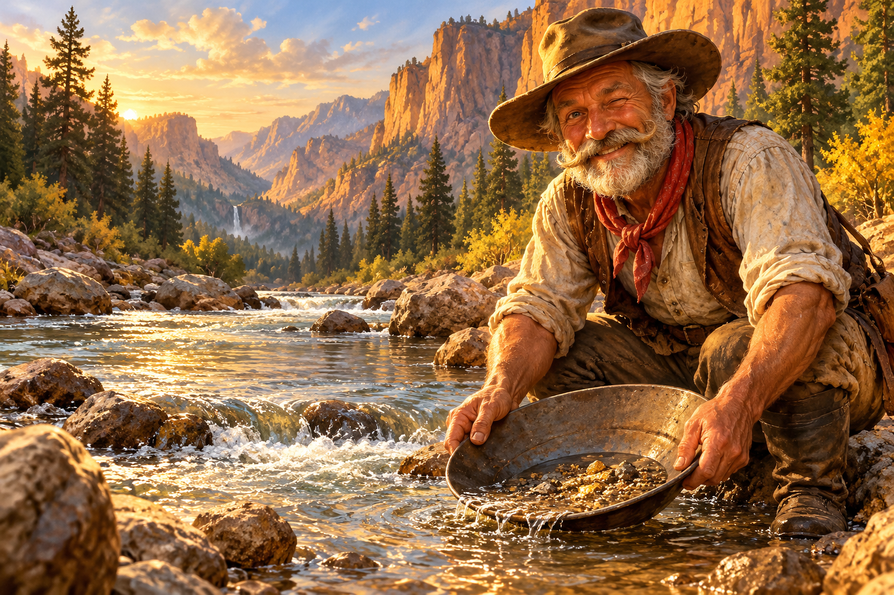

The gentle art of finding
gold in a river.
From choosing your first pan to spotting promising gravel, a welcoming guide to getting your hands wet.
Explore the guide
Follow the river. Read the rocks.
Discover a world of prospecting knowledge,
one trail at a time.
No claim, no fancy gear, no problem. Get to know the basics before your first day by the river.
Visit beginner’s campFrom choosing your first pan to spotting promising gravel, a welcoming guide to getting your hands wet.
Explore the guideLearn the river features that slow heavy material down.
Follow this trailA closer look at the rocks and minerals in your pan.
Follow this trailDiscover historic gold country, river landscapes, and resources for planning your next outing.
Open the map chestThis camp’s library is taking shape. These featured trails are a preview of the guides and field stories to come.
Some come for the gold.
Stay for the adventure.